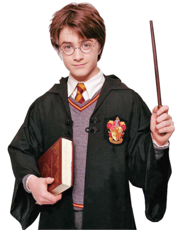
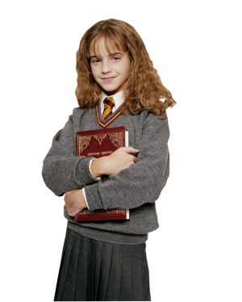
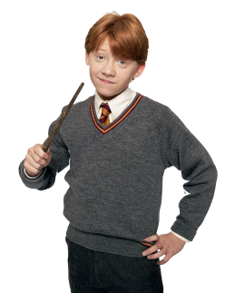
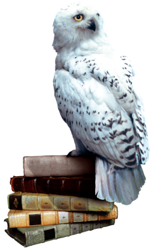

-
Harry Potter
HP 500
DESCRIÇÃO
Aos 11 anos de idade que é um bruxo ao ser convidado para estudar na Escola de Magia e Bruxaria de Hogwarts.
-
Hermione
HP 1000
DESCRIÇÃO
Aparece pela primeira vez em Harry Potter e a Pedra Filosofal, como uma nova estudante em direção a Hogwarts.
-
Ron Weasley
HP 400
DESCRIÇÃO
Rony Weasley é alto, magro, narigudo e cheio de sardas. Melhor amigo de Harry Potter desde que o a caminho do primeiro ano em Hogwarts.
-
Coruja Edwiges
HP 400
DESCRIÇÃO
A coruja branca de Harry, dada de presente no seu aniversário de 11 anos por Rúbeo Hagrid no Beco Diagonal.